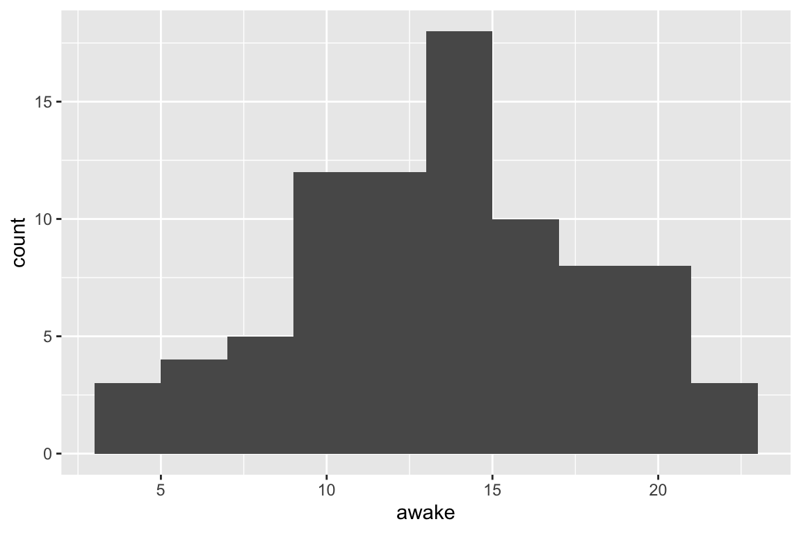
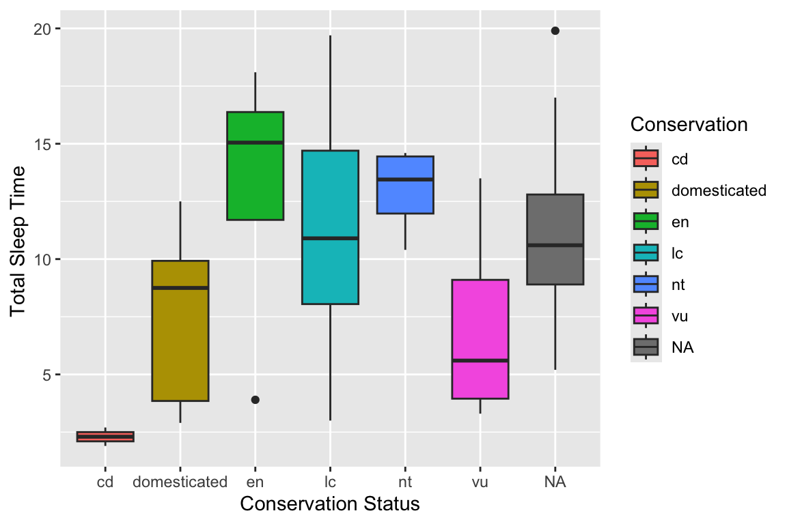

ggplot(msleep, aes(x = brainwt, y = bodywt)) +
geom_point()Warning: Removed 27 rows containing missing values or values
outside the scale range (`geom_point()`).
Now its time to practice what we have learned in class and learn even more! Note that this lab should be completed in R Markdown or Quarto and Knitted to an html document. You will `turn in’ this homework by uploading to your GitHub Math_3190_Assignment repository in the “Labs/Lab_3” directory.
In the ggplot2 library, there is a tibble called msleep. You can load this by loading the ggplot2 library (type library(ggplot2)). From there, you can work with the msleep tibble.
Below is some code for creating a scatter plot of body weight vs brain weight:
ggplot(msleep, aes(x = brainwt, y = bodywt)) +
geom_point()Warning: Removed 27 rows containing missing values or values
outside the scale range (`geom_point()`).
In the code chunk below, modify this code so that it is a line plot instead of a scatter plot.
Create a new code chunk below this paragraph and modify the code from part (a) so that both the points and the line are plotted. Change the color of the line and change the color of the points to any color you’d like. Note: you can add on more than one geom function.
Clearly, it is difficult to see all the points on the plot since many are bunched together. We can alleviate this by plotting the on the log (base 10) scale. Using tidyverse functions, define a new data frame (call it msleep2) with two new variables: one that is the log of brainwt and one that is the log of bodywt. You can just use the log10() function to actually take the log of those variables. Then insert a code chuck below that produces a scatter plot with the log of body weight on the y-axis and the log of brain weight on the x-axis. Be sure the x and y axis labels to indicate that the variables are logged.
An alternative way to plot these data on the log scale is to plot the untransformed variables on the x and y axes and then adding on the functions scale_y_log10() and scale_x_log10() to your plot. Go ahead and do this in a code chunk below. Note that these functions will adjust the scale on the axes so that they correspond to the original variable scales, not the logged variable scales. Very nice!
Below is some code to produce a bar plot of the vore variable, which tells us whether the animal is a carnivore, omnivore or herbivore:
ggplot(msleep, aes(x = vore)) +
geom_bar()
However, this bar plot is quite boring looking. In a code chunk below, make a bar plot of the conservation variable and make it more colorful. Feel free to spice up the bar plot for the vore variable above as well.
The following code will create a histogram for the awake variable, which tells us how long the animal stays awake per day (in hours):
ggplot(msleep, aes(x = awake)) +
geom_histogram(bins = 10)
First, modify that code in the above code chunk so we can easily see each bar in the histogram. Use colors of your choice. Then, in a code chunk below, create a box plot instead of a histogram for the awake variable. Make the box plot look better with the color and fill options.
The following code will create box plots of the sleep_time variable split by conservation with the labels changed:
ggplot(msleep, aes(x = conservation, y = sleep_total,
fill = conservation)) +
geom_boxplot() +
labs(x = "Conservation Status",
y = "Total Sleep Time ",
fill = "Conservation ")
In a new code chunk, create box plots of sleep_rem split by the vore variable. Change the labels to be appropriate. Also, explain what the fill option does here. How does this differ from putting the fill option in the geom_boxplot() function?
The following code will give density plots of the logged brain weight in the msleep2 data frame you created in part (c) split by conservation. If you called your variable something different than logbrain in part (c), you will have to adjust that here. This code also adjusts the labels, adds a title, and changes the font size. Note: I put eval = F in the R code chunk option because I did not create an msleep2 tibble, so this would not run.
ggplot(msleep2, aes(x = logbrain, fill = conservation)) +
geom_density(alpha = 0.5) +
labs(x = "Log(Brain Weight)", y = "Density",
title = "Density Plots of Log(Brain Weight)") +
theme(axis.title = element_text(size = 14))Adjust this code to make density plots for logbody (that you also created in part (c)) split by vore. Adjust the labs() options to make them appropriate for this situation. Also, change the size of the axis labels to be 16 and make the title bold font.
College Distance. In the Data folder in the Math3190_Sp24 repo on my GitHub page is the data set CollegeDistance.csv that was collected in the 1980s on high school students. This data set contains the following variables:
For each part, insert an R code chunk that does what is asked.
Read this data set into R. Use a tidyverse function to read it in as a tibble rather than read.csv() or read.table().
Create a bar plot of the gender variable. Give it a title and change the y axis label to “Frequency”. Feel free to make the bars look nicer as well!
Although pie charts are inferior to bar charts in virtually every way, use this website, https://r-graph-gallery.com/piechart-ggplot2.html, to look up how to make a pie chart in ggplot2 and make one for the ethnicity variable. Some tidyverse functions like group_by(), and summarize() will be useful here. This is a bit more challenging, so feel free to come back to this one later.
Make a stacked bar chart for ethnicity split by income (one bar for each income) so that each bar has a height of 1. Adjust the labels so that they are “African American”, “Hispanic”, and “Other”. You can do this with the labels option in the scale_fill_manual() function. Then change the colors to be colorblind-friendly. One palette that is good for this is the following:
cbPalette <- c("#999999", "#E69F00", "#56B4E9", "#009E73",
"#F0E442", "#0072B2", "#D55E00", "#CC79A7")That palette above is good for up to 8 categories. You can use those colors by putting values = cbPalette in the scale_fill_manual() function.
Another way to easily change the palette is with the scale_fill_brewer() function. There are built-in palettes available. You can also change the fill legend labels with the labels option in this function. At this website: https://r-graph-gallery.com/38-rcolorbrewers-palettes.html, you can see the available palettes. Replace the scale_fill_manual() function from the previous part of this problem with the scale_fill_brewer() and use a palette that looks good to you.
Create a scatter plot with tuition on the y-axis and unemp on the x-axis. Change the x and y labels to be “Unemployment Rate” and “Average 4-Year College Tuition (in thousands)”. Change the plot so that the color of the points are based on the region. Then change the size of the labels to be 14 (the default size is 11) and put a title that is size 14 and bold. Finally, look up how to adjust where the tick marks and grid lines are on the y-axis and put space them every 0.25 thousand.
Create a histogram of the distance variable. Change the x-axis label so the units of distance are shown and add a title. Also, change the color from gray to one of your choice and put borders around the histogram bars. Finally, change the background theme to be anything but gray.
Create side-by-side box plots for the score variable split by income. Change the x-axis and y-axis labels and give the plot a title. Change the color of the box plots to one of your choice.
Create a bar plot of gender with bars split by ethnicity. Use position = "dodge" to get ggplot to put the bars side by side.
The file airlines.csv can also be found on my GitHub page. This data set contains information about 6 airlines from 6 years between 1970 to 1984. This includes the airline, the year, the cost (in $1,000), the output index number (in revenue passenger miles), the fuel price, and the average load factor of the fleet.
Read the data file into R using a tidyverse function. Change the airline variable from numeric to a factor using a pipe and the mutate() function.
Create a plot that looks as similar as possible to the one in the image below. Note, the range on the y-axis is from 0 to 5,000,000 and the color palette is that cbPalette we used earlier. The line type can be changed by putting geom_line(aes(linetype = airline)). The font size of the axis labels is 14 and the sizer of the title is 18.

Now, instead of plotting all six airlines on the same plot, use facet_grid() to graph six plots (one for each airline) side-by-side. Be sure to put labeller = label_both in the facet_grid() function so it is more readable.